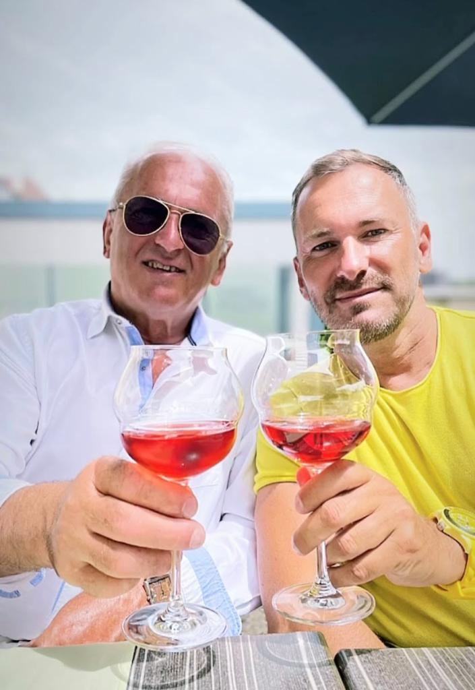

PROMOUVOIR SES PRODUITS ECO-RESPONSABLE A LA PLANETE NOTRE PRIORITE VOUS SATISFAIRE ET AUSSI PRESERVER LA PLANETE
Le conseiller agricole épaule l’agriculteur pour l'aider à faire fructifier ses cultures ou son élevage. Son objectif : augmenter les chances de réussite d'une exploitation grâce à son expertise !
Nous trouver

Nos partenaires
Et tant à découvrir...
•De grandes qualités d'écoute sont indispensables, pour mieux comprendre et résoudre les difficultés rencontrées par les exploitants
Les châteaux du Médoc
Déterminer des besoins en financement - Analyser les résultats d'une expérimentation - Mettre en place des actions correctives et préventives - Identifier une anomalie de réaction ou développement d'une exploitation agricole - Concevoir un plan d'action de projet - Planifier les étapes d'un projet - Concevoir les solutions technico-économiques (reprise d'exploitation, reconversion, ...) adaptées aux problématiques d'un site de production (environnement, pollution, rendements, ...) - Établir un compte rendu d'analyse - Concevoir des procédures de tests
Le vignoble Bordelais